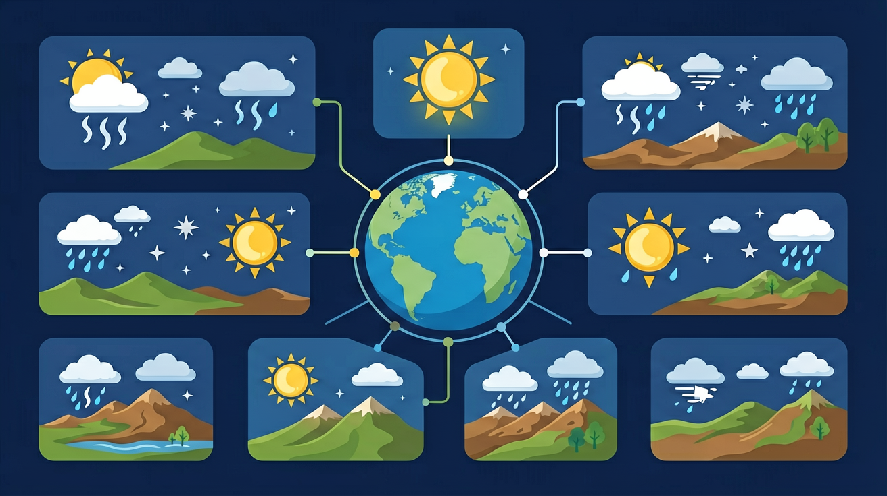

收看天气预报节目，识别常见的天气符号，模拟播报天气。

🎯 能说出天气与气候的3个区别
🎯 能判断气温曲线和降水柱状图的气候类型
🎯 能分析纬度、海拔对气温的影响
❓ 为什么天气预报有时候不准？
❓ 夏天为啥感觉比天气预报说的更热？
❓ 为啥山上比山下冷那么多？
学完这一课，这些问题你都能自信地回答。
下列哪项属于气候特征？
海拔升高100米气温约降低？
气候基础（天气/气温/降水）是初中地理的重要内容。收看天气预报节目，识别常见的天气符号，模拟播报天气。
结合实例，说明天气和气候对人们生产生活的影响。
点击时代/图层按钮切换地图；悬停边界，点击城市标记查看说明。
天气是短时间的大气状况，气候是长时间的平均状态。气温与降水是气候两大要素。气温日较差、年较差，降水季节分配，共同描述一个地方的气候特征。读气温曲线与降水量柱状图是基本功。
先读最热/最冷月气温，再看降水总量与集中季节，最后归纳气候特征并用术语表达。
常见误区：常见误区是把某天下雨说成“气候多雨”，概念混用。
气候与天气的主要区别是？
1. 机场跑道除冰决策：北京首都机场气象台实时监测露点温度（dew point）与跑道温度差。当两者差值≤3℃且气温＜5℃时，自动触发除冰预警。这直接应用了"近地面逆温层形成条件"知识，2022年冬季因此避免27起跑道结冰事故。
2. 光伏发电功率预测：宁夏光伏电站通过分析云量符号（okta）调整发电计划。1-2分okta（少云）时按峰值发电，7-8分okta（阴天）则启动备用电源。2023年该技术使弃光率从12%降至5%，相当于多供电1.2亿度。
3. 厄瓜多尔玫瑰种植：基多花卉农场根据"气温日较差"（diurnal temperature range）安排采摘。当日较差＞15℃时（白天25℃/夜10℃），延缓采摘以保证花茎硬度。该措施使玫瑰出口优质率从68%提升至92%。
1. 问题：为何乌鲁木齐（北纬44°）比哈尔滨（北纬46°）冬季更冷？分析线索：比较两地1月均温（-15.4℃ vs -18.3℃）似乎矛盾。建议从地形入手——天山阻挡西风带水汽，导致乌鲁木齐大陆性更强；而哈尔滨受日本海残留水汽影响，注意查看降水量柱状图的冬季差异。
2. 问题：电视天气预报中"多云转晴"的符号变化，是否代表云层物理移动？分析线索：先观察卫星云图中锋面系统移动速度（约30-50km/h），再思考城市尺度（约20km）与天气系统尺度的关系。重点理解"天气符号本质是气团控制权交替"的原理。
先从手机天气App的降水概率60%引发疑问：这个数字如何得出？气象学家通过统计历史相似气压场（如1010hPa低压槽）、湿度（露点差＜2℃）、风场（西南风4m/s）等数据，计算出降水发生概率。接着理解天气符号系统——三角形冰雹符号需同时满足强对流指数＞40和0℃层高度＜3500m的条件。当看到昆明准静止锋符号时，立刻能联想到贵阳"天无三日晴"的成因。降水测量则要从标准雨量器结构说起：20厘米口径漏斗防止溅失，毫米刻度对应1L/m²的换算。最后用三亚与兰州的气温曲线对比，揭示海洋性气候与大陆性气候的根本差异：三亚年较差仅6℃（最冷月21℃），而兰州达30℃（1月-7℃/7月23℃），这源于海水热容量（4.18J/g·K）是土壤（0.8J/g·K）的5倍。整套知识最终指向世界气候分类图——柯本分类中"Cfa"型（副热带湿润气候）的典型城市上海，其气候特征正由这些基础数据精确构建。
1. 混淆"天气"与"气候"概念：学生常将"今天下雨"说成"这里气候多雨"。根源在于不理解时间尺度差异——天气是短时大气状况（如小时/日变化），气候是长期统计特征（30年以上均值）。正确理解需结合实例：上海7月某日暴雨是天气现象，而"夏季高温多雨"才是气候特征。
2. 误读气温曲线图：在分析北京气温年变化图时，常有学生将7月最高温记作40℃（实际日均温26℃），源于混淆极端值与日均值。需明确气候数据使用"月均温"，如北京7月日均温26.5℃（1981-2010年均值），极端高温41.9℃仅代表单日记录。
3. 降水柱状图单位混淆：部分学生会把800mm年降水量误解为单次降雨量。实际降水单位需区分时间尺度——气象预警用"毫米/小时"，气候图用"毫米/月"或"毫米/年"。例如广州年降水1800mm，但单日最高记录仅324mm（2017年台风天鸽期间）。
复制提示词到 AI 学伴，生成「气候基础（天气/气温/降水）」的示意图或结构提纲；也可以上传你手绘的示意图，请 AI 学伴点评。
复制后可粘贴到 AI 学伴继续对话。
关于天气与气候的正确表述是
对比教学楼南北侧气温差异
关于气候基础（天气/气温/降水）的学习，哪种做法最科学？
选一个并查看反馈。
先独立作答，再点选项查看对错与错因。
气象站数据显示某日降水量达50mm，这属于
下列最能反映当地气候特征的是
夏季午后常出现雷阵雨，说明该地
气象学中，____是指某地多年天气状况的综合表现
答案：气候
气候具有稳定性特征
测量降水量时，需将雨量器放置在____的开阔场地
答案：平坦
避免建筑物或树木遮挡
✅ 任何大气状态都属天气
💡 混淆天气与气候的时间尺度
✅ 年降水量是12个月总和
💡 忽视降水量的累积性
口诀：天气短气候长，海均匀陆集中，海拔高气温低，纬度高热浪袭
类比：气候像人的性格，天气像每天的心情
（真题）右图气候类型的特点是？
（迁移）新疆‘早穿皮袄午穿纱’主因？
（应用）某地7月均温20℃，1月-5℃，年降水500mm，属？
点击节点跳转到对应章节；可切换布局。